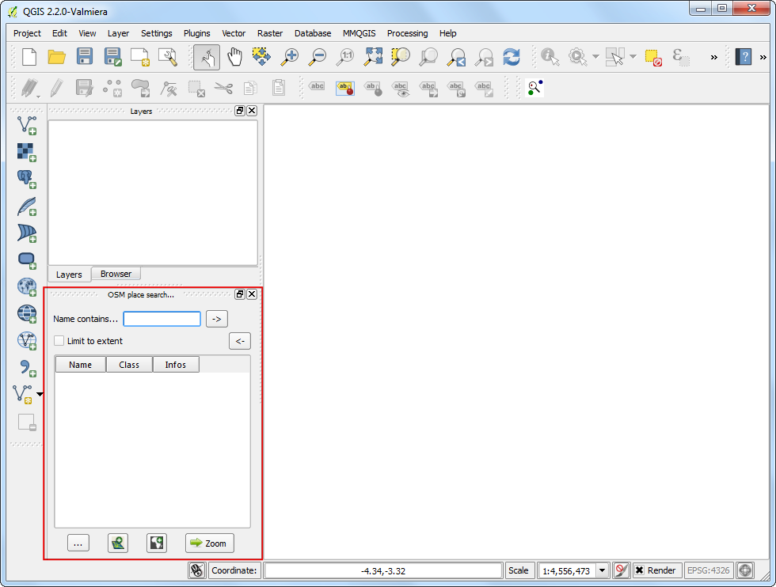

Lengten van lijnen en statistieken berekenen
QGIS heeft ingebouwde functies om verschillende eigenschappen te berekenen, gebaseerd op de geometrie van het object - zoals lengte, gebied, omtrek etc. Deze handleiding zal weergeven hoe Field Calculator gebruikt kan worden om een kolom toe te voegen met een waarde die de lengte van elk object vertegenwoordigt.
Overzicht van de taak
We zullen een polyline shapefile gebruiken van spoorwegen in Noord Amerika en proberen de totale lengte te bepalen van spoorwegen in de Verenigde Staten.
Andere vaardigheden die u zult leren
Uitdrukkingen gebruiken om objecten te selecteren.
Opnieuw projecteren van een laag vanuit geografisch naar geprojecteerd Coordinate Reference System(CRS).
Statistieken bekijken voor waarden van een attribuut in een laag.
Procedure
Ga naar .

Blader naar het bestand ne_10m_railroads_north_america.zip en klik op OK.

In het dialoogvenster Selecteer lagen om toe te voegen..., kies de laag ne_10m_railroads_north_america.shp.

Als de laag eenmaal is geladen zult u opmerken dat de laag lijnen bevat die de spoorwegen voor geheel Noord-Amerika vertegenwoordigen. Omdat we de lengte van de lijnen alleen willen berekenen voor de Verenigde Staten, moeten we de lijnen selecteren die in de Verenigde Staten liggen. Klik met rechts op de laag en selecteer Open attributentabel.

D laag heeft een attribuut genaamd sov_a3. Dit is de drieletterige code voor het land waar een bepaald object in valt. We kunnen de waarde van dit attribuur gebruiken om objecten te selecteren die in de VS vallen.

Klik, in het venster Attributentabel, op de knop Selecteer objecten m.b.v. een reguliere expressie.

A nieuw dialoogvenster Selecteren met een Expressie zal openen. Zoek naar het attribuut sov_a3 onder Velden en waarden in het gedeelte Functielijst. Dubbelklik er op om het toe te voegen aan het tekstgebied Expressie. Voltooi de expressie door in te typen "sov_a3" = 'USA'. Klik op Selecteren gevolgd door Sluiten.

Terug in het hoofdvenster van QGIS zult u zien dat alle lijnen die in de VS vallen zijn geselecteerd en geel gekleurd zijn.

Laten we nu onze selectie opslaan als een nieuw shapefile. Klik met rechts op de laag ne_10m_railroads_north_america en selecteer Selectie opslaan als....

Klik op Bladeren en noem het uitvoerbestand usa_railroads.shp. We willen ook het CRS van de laag wijzigen. Klik op Bladeren naast CRS.
Notitie
De ingebouwde functies die de geometrie van een object gebruiken voor berekeningen gebruiken de maateenheid van het CRS van de laag. Geografische Coordinate Reference System(CRS) zoals EPSG:4326 hebben graden als maateenheid - dus zou de lengte van het object in graden zijn en het gebied in vierkante graden - wat geen betekenis heeft. U moet een geprojecteerd Coordinate Reference System gebruiken met een maateenheid in meters of feet om dergelijke berekeningen uit te kunnen voeren.

Omdat we zijn geïnteresseerd in het berekenen van lengte, selecteren we een equidistance-projectie. Typ north america equ in het zoekvak Filter search box. In het resultaatpaneel onderin, selecteer North_America_Equidistant_Conic EPSG:102010 als het CRS. Klik op OK.

In het dialoogvenster Vectorlaag opslaan als..., selecteer Voeg opgeslagen bestand toe aan kaart en klik op OK.

Als het exportproces is voltooid zult u een nieuwe laag usa_railroads zien geladen in QGIS. U kunt het vakje naast de laag ne_10m_railroads_north_america uitschakelen omdat we die niet meer nodig hebben.

Klik met rechts op de laag usa_railroads en selecteer Open attributentabel.

Nu is het tijd om een kolom met de lengte van elk object toe te voegen Plaats de laag in de modus Bewerken door te klikken op de knop Bewerken aan/uitzetten. Klik, eenmaal in de modus Bewerken, op de knop Open veldberekening.

In de Veldberekening, selecteer Nieuw veld aanmaken. Voer length_km in als Naam voor veld. Kies Decimaal getal (real) als het Type voor veld. Wijzig de uitvoer Precisie naar 2. Zoek, in het paneel Functielijst , naar $length onder Geometrie. Dubbelklik er op om het toe te voegen aan de Expressie. Voltooi de expressie als $length / 1000 omdat onze CRS voor de laag in de eneheid meters is en we de uitvoer willen in km. Klik op OK.

terug in de Attributentabel, zult u een nieuwe kolom zien verschijnen: length_km. Klik op de knop Bewerken aan/uitzetten om de wijzigingen in de attributentabel op te slaan.

Nu we de lengte van elke individuele lijn in onze laag hebben, kunnen we ze eenvoudig optellen en de Total-lengte te vinden. Ga naar .

Selecteer als Invoer vectorlaag usa_railroads. Kies length_km als het Doelveld en klik op OK. U zult verschillende statistieken zien verschijnen. De waarde Som is de totale lengte van de spoorwegen waarnaar we zochten.
Notitie
Dit antwoord zal licht afwijken als een andere projectie wordt gekozen. In de praktijk worden lengtes van lijnen voor wegen en andere lineaire objecten op de grond gemeten en als attributen toegevoegd aan de gegevensset. Deze methode werkt bij afwezigheid van een dergelijk attribuut en als een benadering van de echte lengten van de lijnen.